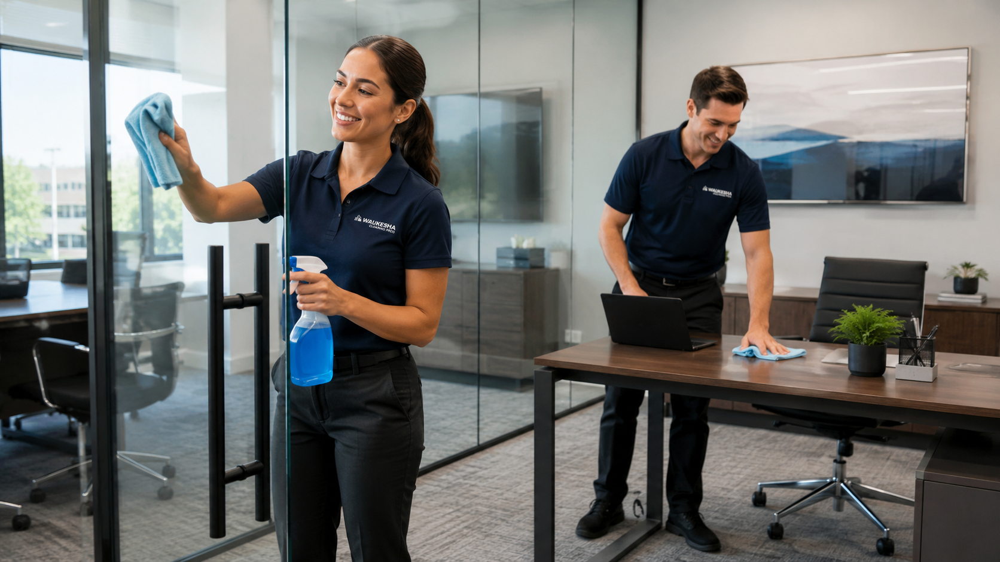

Fitness Center and Gym Cleaning Services
Fitness centers and gyms face constant use, sweat, locker room traffic, equipment handling, and high expectations from members. A strong cleaning plan helps keep workout areas, restrooms, locker rooms, front desks, and shared surfaces feeling fresh and trustworthy.
A cleaning plan built for fitness centers and gyms
Fitness centers and gyms face constant use, sweat, locker room traffic, equipment handling, and high expectations from members. A strong cleaning plan helps keep workout areas, restrooms, locker rooms, front desks, and shared surfaces feeling fresh and trustworthy.
Waukesha Cleaning Pros adjusts scope, timing, supplies, and cleaning frequency around your facility. That means your service plan can focus on the areas your staff, guests, patients, members, or customers notice most.
- Locker room and restroom cleaning
- Workout area cleaning
- High-touch equipment area attention
- Front desk and lobby cleaning
Fitness Centers and Gyms have their own cleaning priorities
Fitness centers and gyms face constant use, sweat, locker room traffic, equipment handling, and high expectations from members. A strong cleaning plan helps keep workout areas, restrooms, locker rooms, front desks, and shared surfaces feeling fresh and trustworthy.
Common cleaning tasks for fitness centers and gyms
Businesses trust Waukesha Cleaning Pros to keep their spaces ready.
Satisfaction Guaranteed
If you're not completely happy with the cleaning, we wipe it from the invoice.